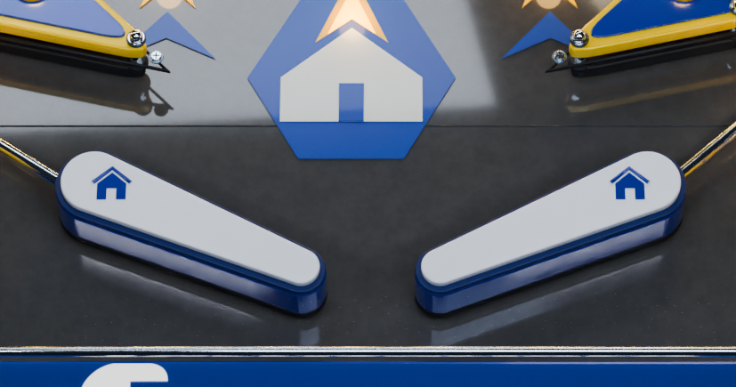
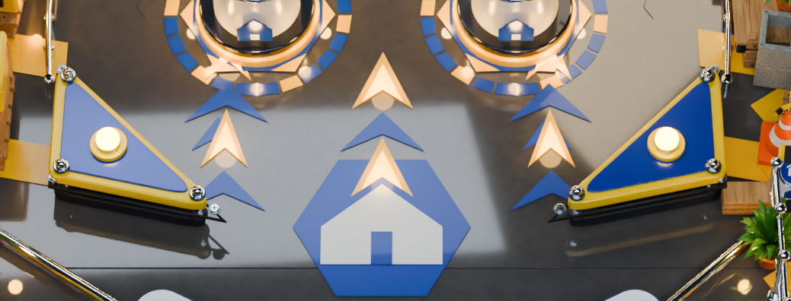
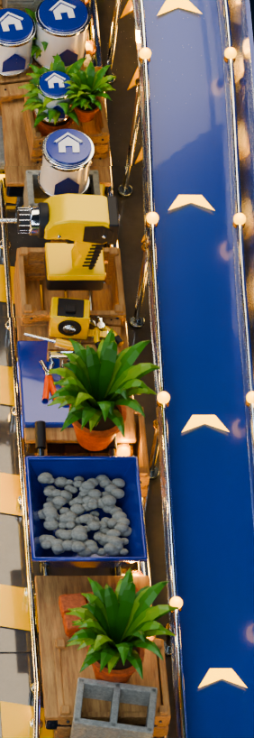
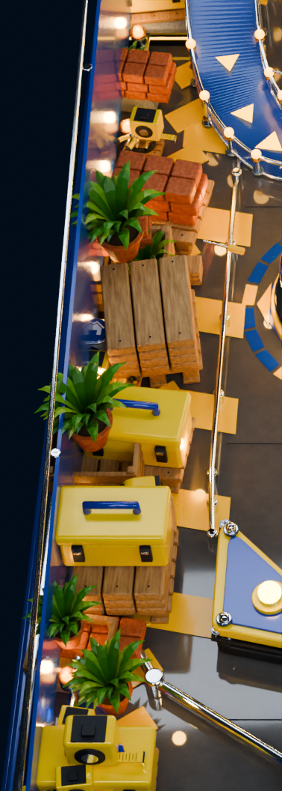
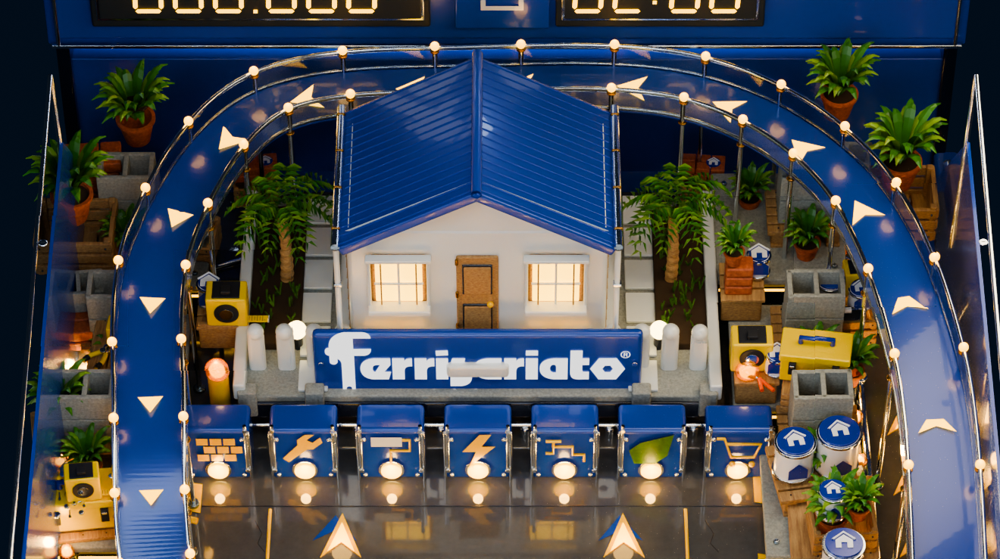
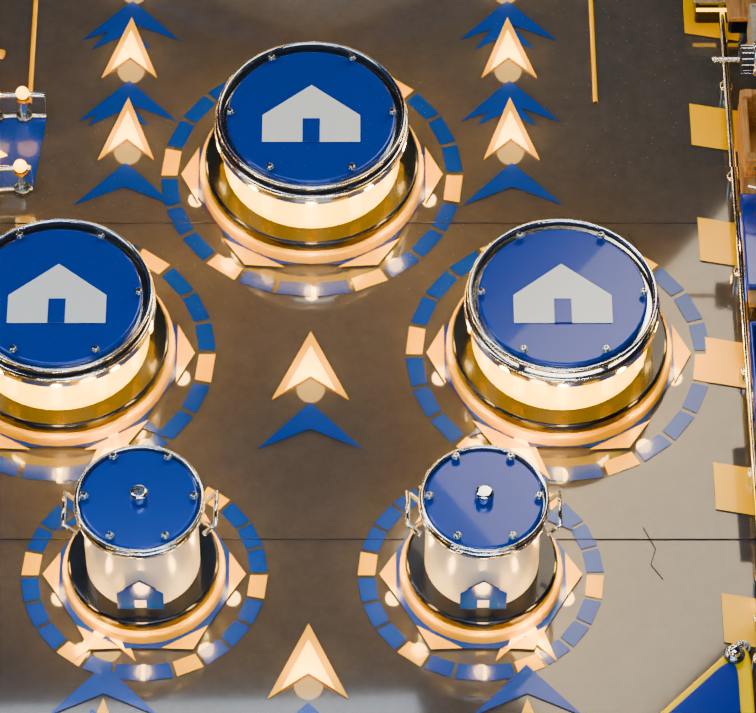
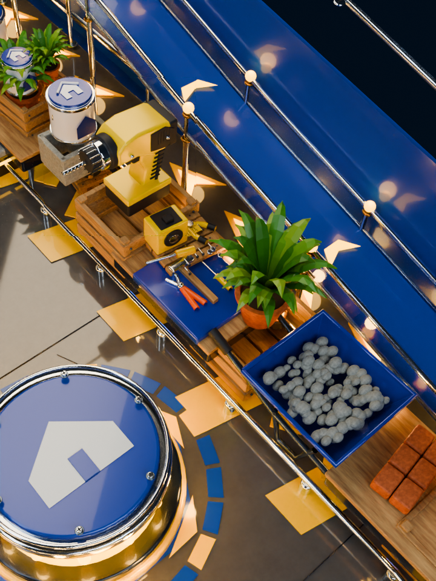
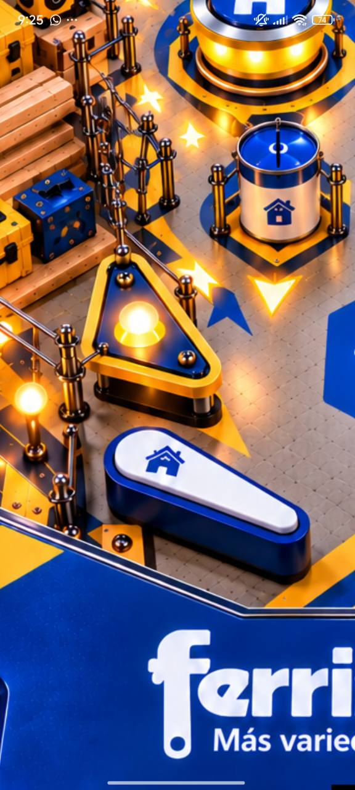
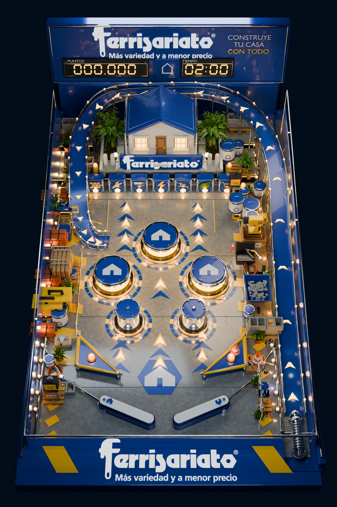

Ferrisariato · Componentes y densidad V5
Flippers y slingshots reconstruidos por piezas. Microescenas de obra con materiales, herramientas y jardinería sobre pallets, cajas y plataformas. La vista general y los seis recortes conservan la cámara del juego. La vista oblicua adicional permite examinar el volumen de las herramientas.
Vista general actual

Flippers: cuerpo cónico, tapa blanca, goma y eje

Slingshots: base, marco, panel, postes y bombilla

Miniaturas y herramientas: taladro, pintura, pinzas, flexómetro y grava

Microescenas laterales: materiales, cajas y plantas superpuestos

Esquinas y fondo: terrazas y alturas escalonadas

Piso pulido: reflejos reales de mecanismos y luces

Herramientas y miniaturas · vista oblicua de detalle

Referencia de los mecanismos y miniaturas

Fotografía aprobada: contorno y ensamblaje.Fotografía aprobada: agrupación de herramientas y materiales.Antes y después de esta corrección

Entrega anterior.Corrección de componentes, escenografía y reflejos.